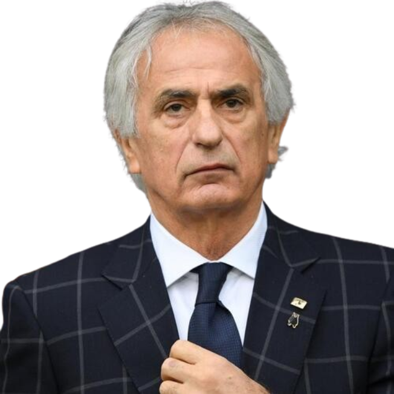
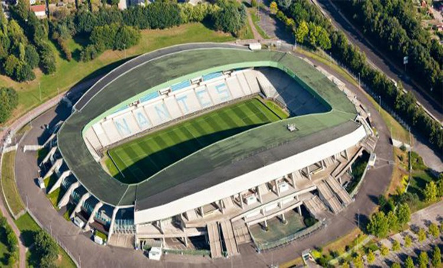

Treinador: Valid Halilhodzic
Vahid Halilhodžić é um mestre da disciplina e do pragmatismo, reconhecido pela sua capacidade de restaurar a ordem e a dignidade competitiva em clubes históricos através de uma liderança carismática e inabalável.

Estádio: Stade de la Beaujoire – Louis Fonteneau
O Stade de la Beaujoire – Louis Fonteneau é a casa do FC Nantes e possui uma rica história ligada a grandes competições internacionais.

Estilo de Jogo:
O estilo de jogo de Vahid Halilhodžić é moldado por um pragmatismo rigoroso e uma disciplina tática inabalável, priorizando a solidez defensiva e a intensidade física como pilares fundamentais para estabilizar equipas em crise e garantir a permanência no escalão principal.
"Force et Courage!"